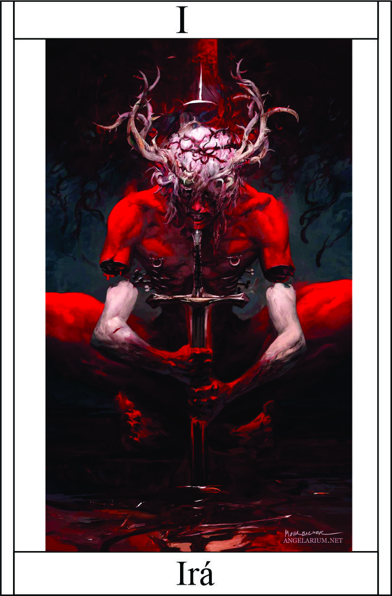

Ira
Têndencia: Neutro Mal
Passiva - Chama Interior:
hama Interior representa a fúria inextinguível que arde dentro do usuário. Quando ativada, essa passiva aumenta consideravelmente a força e a velocidade do usuário, concedendo-lhe um poderoso impulso em combate. A chama manifesta-se fisicamente ao redor do usuário, envolvendo-o em uma aura de fogo intenso. +1 em Esquiva e Protidão
Legado 1 - Golpe do Desespero:
Com o Golpe do Desespero, o usuário canaliza toda a sua ira e ódio acumulados em um ataque devastador. Ao desferir esse golpe, o usuário libera uma explosão de energia concentrada, capaz de causar danos significativos ao alvo. O poder desse golpe é amplificado pela intensidade emocional do usuário, tornando-o uma arma mortal quando utilizado em seu estado de fúria máxima.
Cada furia acumulada até 10, causa 1 de dano. Dano: F + Furia + 5
usuário deve estar em um estado de raiva e ódio extremos, com uma intensa vontade de destruir o alvo.